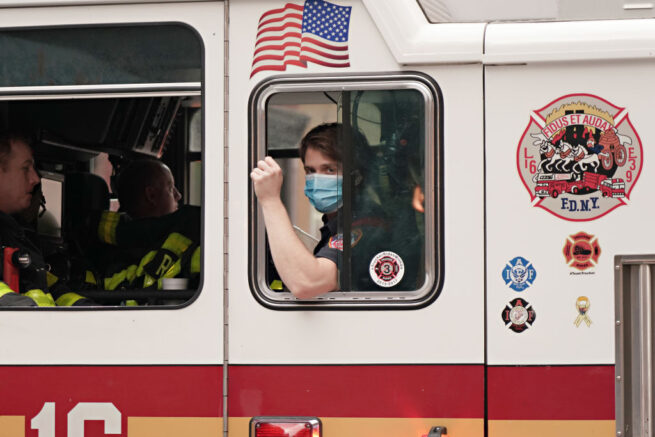
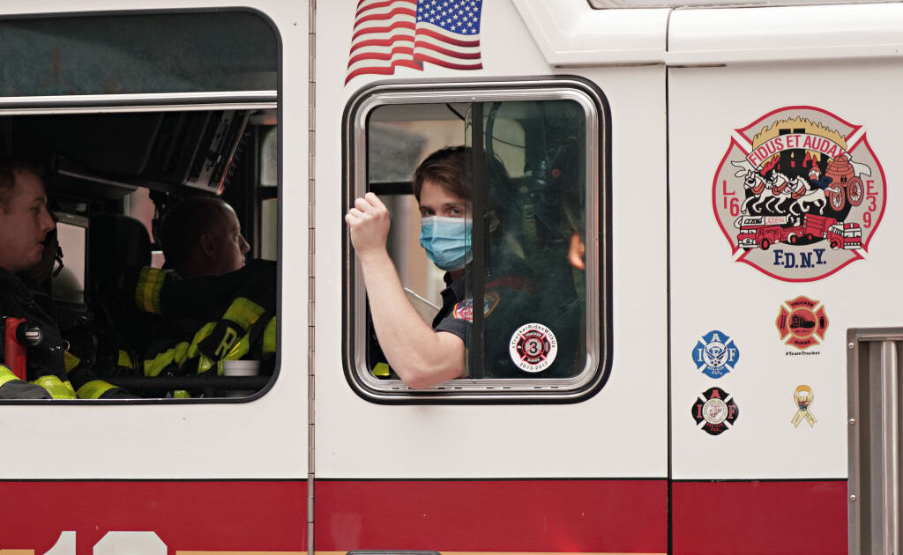

21 injured, including 16 firefighters in NYC apartment fire

OAN Newsroom
A massive fire broke out in a New York apartment building, which injured at least 21 people, including 16 firefighters.The blaze erupted on the top floor of a Queens apartment building Tuesday afternoon and resulted in more than 400 firefighters arriving to fight the fire.
Officials said a resident left his apartment door open while fleeing, which led to the blaze spreading to the entire floor.
FDNY members are operating on scene of a 5-alarm fire at 89-07 34th Avenue in Queens.pic.twitter.com/jRHUpQbL5l — FDNY (@FDNY) April 6, 2021
'The fire advanced quickly in what we call a cockloft, the area between the ceiling and the roof,' NYC FIRE Commissioner Daniel Nigro said.'We’ve stressed over the years the seriousness of that.If you do unfortunately have a fire in your home, it’s important to close that door.'
The fire was fully extinguished Wednesday morning.According to reports, more than 200 residents were displaced.
Posted On: 2021-04-07T00:00:00

Content Date: 2021-04-07
Download Date: 2021-04-16
Document ID: L0C04A1IN